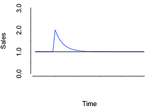

What does Advertising Adstock mean?
Advertising adstock models an advertisements build and decay throughout it’s lifecycle.
What is the Business Challenge?

Advertising campaigns are crucial way for a company to reach out to potential customers. In an era of extremely saturated mediums (Constant TV advertisements, multitudes of online ads), it is critical to understand and accurately model the lifecycle of an advertisement. Doing so will allow a company to optimize a campaign’s reach to potential customers.
What is Adstock?
Adstock is a model to help understand how an advertisement builds and decays in the consumer market. Advertising builds awareness in consumers’ minds, but as time progresses that awareness will slowly fall (or decay) back to a pre-defined base level. This ‘half-life’ of consumer awareness can be accurately depicted by a proper adstock decay model.
In a mathematical form, a simple adstock decay equation is:
Where AT is the adstock value at time, TT is the amount of advertising at time T, and λ is the decay of advertisement value (Joy). While a basic representation, this equation represents the recursive decay that many advertisements go through.
How will Ready Signal Help?
Ready Signal allows you to change your signal to automatically apply an adstock decay data treatment to your data. With one click of a button, a signal can be automatically calculating and incorporating adstock decay into the data stream.
References:
Joy, Joseph. “Understanding Advertising Adstock Transformations.” Munich Personal RePEc Archive , 15 May 2006, mpra.ub.uni-muenchen.de/7683/4/MPRA_paper_7683.pdf.
Mohanna, Gabriel. Advertising Adstock, rstudio-pubs-static.s3.amazonaws.com/25188_eae6587e660a447f82a467c400d88a63.html#2.